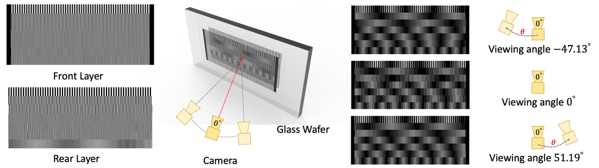
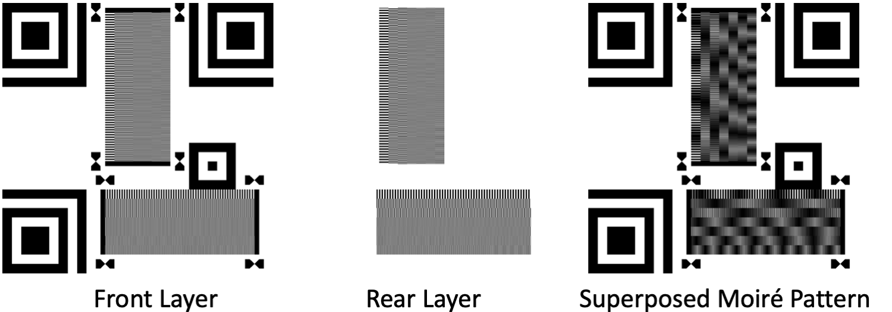

MoiréTag: Angular Measurement and Tracking with a Passive Marker
Simeng Qiu, Hadi Amata, Wolfgang Heidrich
SIGGRAPH, 2023

Angular measurement via Moiré Patterns. We encode angular information into a Moiré pattern generated by periodic binary structures printed on the two sides of a glass wafer. Angular shifts manifest themselves as a phase shift in the lowest frequency of the pattern (see rectified patches on the right). We combine multiple Moiré patterns of different base frequencies to perform accurate measurements over a wide angular range.
Abstract
Stable, low-cost, and precise visual measurement of directional information has many applications in domains such as virtual and augmented reality, visual odometry, or industrial computer vision. Conventional approaches like checkerboard patterns require careful pre-calibration, and can therefore not be operated in snapshot mode. Other optical methods like autocollimators offer very high precision but require controlled environments and are hard to take outside the lab. Non-optical methods like IMUs are low cost and widely available, but suffer from high drift errors.
To overcome these challenges, we propose a novel snapshot method for angular measurement and tracking with Moiré patterns that are generated by binary structures printed on both sides of a glass plate. The Moiré effect amplifies minute angular shifts and translates them into spatial phase shifts that can be readily measured with a camera, effectively implementing an optical Vernier scale. We further extend this principle from a simple phase shift to a chirp model, which allows for full 6D tracking as well as estimation of camera intrinsics like the field of view. Simulation and experimental results show that the proposed non-contact object tracking framework is computationally efficient and the average angular accuracy of 0.17 degree outperforms the state-of-the-arts.
MoiréTag Layout

Paper and Supplementary
Paper [Simeng2023MoireTag.pdf ~19.9 MB]
Supplementary [supplementary.pdf ~5.2 MB]
video
Code and dataset
Citation